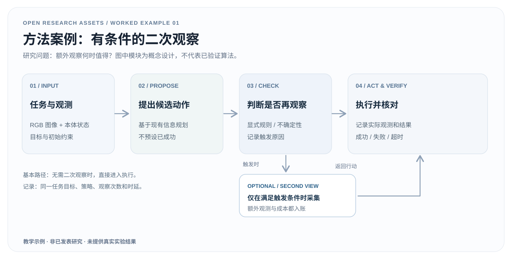
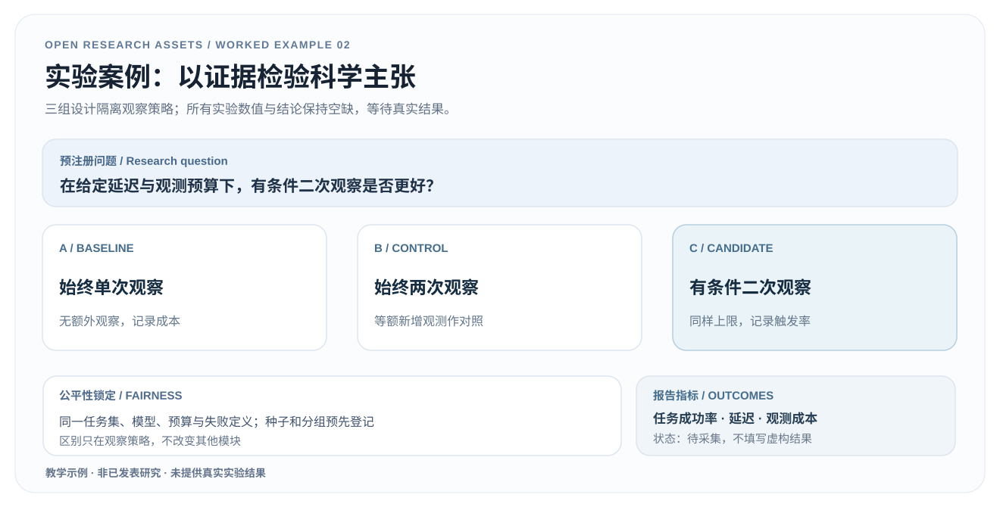
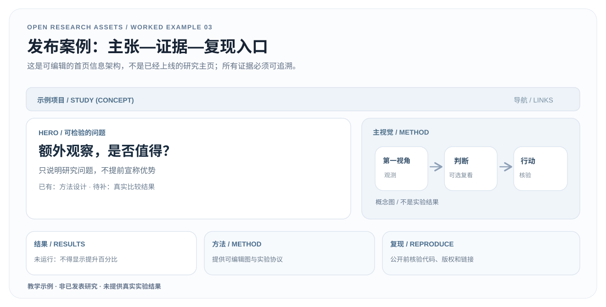

OPEN RESEARCH ASSETS / 3 WORKED EXAMPLES
一个科学问题，三种可复用产物。
用一个假设的机器人视觉操作问题，演示如何从方法图走到可证伪实验，再到负责任的研究项目主页。真正可编辑、可下载、可核查。
示例声明 / EXAMPLE DISCLOSURE
这是原创教学情境，不是已发表的研究；没有机器人实验、性能数字、公开代码或论文。真正使用时必须替换为自己的真实材料并完成验证。
EXAMPLE / 01
从研究问题到 Method Figure
把输入、决策、可选分支和核验变成一张可编辑的因果图，而不是概念装饰。
输入 / INPUT
机器人操作目标、RGB 观察、状态定义和二次观测约束。
方法 / METHOD
厘清每个箭头代表的数据或控制流，补充触发条件与不能再观察时的回退。
验收 / VERIFY
能否把每个方框对应到真实模块？分支是否有确定的退出条件？


原生可编辑 SVG · 教学示例 · 无真实实验结果
EXAMPLE / 02
从科学主张到对照实验
把“有条件二次观察更好”改写为可被反驳的 A/B/C 实验，结果留空。
输入 / INPUT
一个可证伪的主张，公平的三组观察策略，以及预设的预算。
方法 / METHOD
冻结数据划分、失败判据、指标与成本口径；将原始证据记录在 CSV。
验收 / VERIFY
是否存在能推翻主张的结果？三组是否使用可比的模型与预算？


原生可编辑 SVG · 教学示例 · 无真实实验结果
EXAMPLE / 03
从证据到项目主页
先核对可以公开的事实，再做主张、方法、结果和复现的页面组织。
输入 / INPUT
研究问题、方法图、结果登记与当前真实公开状态。
方法 / METHOD
Hero 只呈现问题；缺失的结果和代码明确写待发布，不制造假按钮。
验收 / VERIFY
读者能否快速分辨已验证、待验证和无法复现的部分？


原生可编辑 SVG · 教学示例 · 无真实实验结果
三个案例如何串在一起？
同一份输入简报定义待回答的问题；方法图表达可实现的机制，实验设计为每个主张提供可反驳证据，最后的主页只发布经过核实的结果。三步中的文件不会自动变成真实研究。